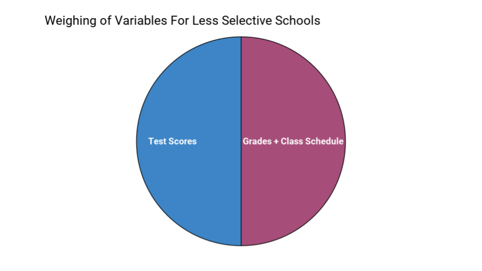
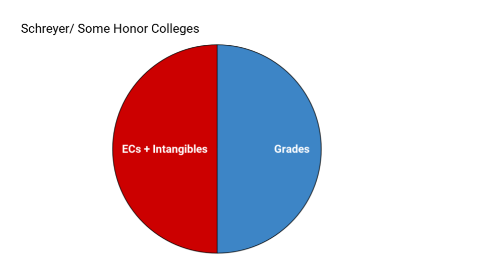

FAQ + Basics
Because I get so many questions about whether test scores matter, how admissions officers weigh your stats, etc, I will give chart approximations showing how these variables are weighed. This is only to give you a sense of how the evaluations work.
This is a chart for how most liberal arts colleges, Ivies, and schools with acceptance rates under ~50% tend to weigh applicant's stats (also how merit aid is often calculated too):

ECs stands for extracurriculars.
The reason the 'intangibles' matter so much is because the grades and test score sections are often the same or very similar between applicants.
Here is a chart for the less selective schools. This often includes large state schools who don't have the time to evaluate things besides grades and scores (the selective state schools more likely use the above chart). These are often good 'safeties' for a lot of students:
Sometimes schools will treat you like the above chart if your grades and scores are high enough; they will then evaluate the students who are more 'in the middle' like the first chart.
It is important to remember that these are generalized estimates of how the variables are weighed and there are individual differences among colleges. For example, the honors college at Penn State University, Schreyer, doesn't consider scores when considering applicants to the honor college. Thus their graph would be:
Sometimes schools will simply accept you (your 'safeties') if your grades and scores are high enough; they will then evaluate the students who are more 'in the middle' like the first chart.
The admissions process is, of course, very complicated and these charts are oversimplifications of the process. Still, they can give an idea of how the admissions work and, in general, these charts tend to be close to how the variables are evaluated.
Gender And Academic Interest ‘Advantages’
This could be put in ‘application strategy,’ but I don’t want this to be a strategic use. Rather it is simply something to be aware of in order to have a more complete understanding of the process.
Colleges are seeking diversity as I discussed earlier. So, any non-common demographic tends to have a slight advantage in the process. This is seen clearly through the acceptance rates and test scores of different races. It isn’t limited to race though.
Here are a couple of examples of (often unintended) advantages:
- Applying as a major or to a college within the school (ie College of Engineering, School of Business, etc) not considered one of their 'strengths.'
- For example, applying to Carnegie Melon as a non- computer science major gives you better ‘chances’ than a similar applicant applying to the more common majors. The School of Computer Science acceptance rate is 7% compared to Humanities and Social Sciences which is 22%. The testing statistics for each school show similar discrepancies.
https://admission.enrollment.cmu.edu/pages/undergraduate-admission-statistics - This applies to other schools as well like applying to MIT as a non-stem major for example.
- For example, applying to Carnegie Melon as a non- computer science major gives you better ‘chances’ than a similar applicant applying to the more common majors. The School of Computer Science acceptance rate is 7% compared to Humanities and Social Sciences which is 22%. The testing statistics for each school show similar discrepancies.
- Applying to a field and/or school where your gender is less common.
- Females sometimes have significantly higher acceptance rates when applying to STEM schools or programs (Cornell’s college of engineering, etc) compared to males. Caltech’s acceptance rate for women is 16% while for men only 6%. On the other end, males have a statistical advantage applying to William and Mary where the male acceptance rate is 14% higher than the females.
- The statistical differences are best seen for yourself rather than me trying to make sense of them, though.
https://www.washingtonpost.com/news/grade-point/wp/2016/03/14/want-a-college-admissions-edge-these-schools-might-give-you-a-gender-advantage/?utm_term=.16be500fd728